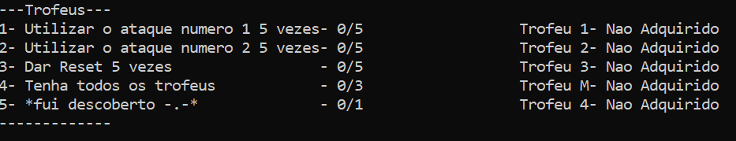

Neste jogo, terás três personagens para escolher: Kitoo, Kaichu e Kweed. Seleciona um deles e avança para a batalha, onde enfrentarás três tipos de inimigos. Cada inimigo deixará três colecionáveis diferentes. Além disso, temos um sistema de conquistas, onde ao realizares certos movimentos, serás recompensado. O jogo será no estilo Pokémon, mas desta vez, cada personagem terá dois ataques diferentes.
Para atacar, basta clicar no botão 1, e para curar, clique no botão 2.
Seleção de personagens
Aqui selecionas o personagem que mais gostares
Menu
Aqui teremos o Menu onde teras , a batalha , a info ,o inventario ,trofeus , botao sair e tambem temos um sistema de resets que se resetares a dificuldade fica no modo facil
Batalha
Ao pressionar 1 vai para a batalha, onde tens 2 escolhas podes atacar clicando no botão 1 e curar no botão 2 mas imagina que erras a tecla e clicas sem ser no 1 ou 2 tu automaticamente perdes a vez. Cuidado os inimigos têm dois ataques, eles podem atacar-te ou curarem-se!
Inventario
Ao pressionar 3 ira para o inventario , onde veras os itens que coletaste durante a tua jornada
Conquistas e Trofeus

Ao pressionar 4 levar-te-á para as conquistas , quando completas uma conquista recebes um trofeu de recompensa
Aprimoramentos
Quando derrotas um oponente as tuas habilidade ficam mais fortes e a tua vida aumenta
Colecionaveis
Quando derrotas um oponente tambem ira cair um colecional que vai ser automaticamente introduzido no teu inventario
Resets
No menu ao clicar 3 vezes no 6 ira fazer um resete onde tu podes resetar para poder ganhar as conquistas